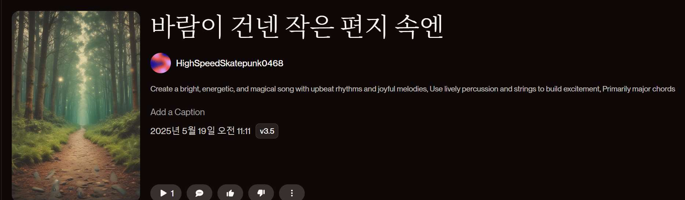

프로그램 #1
🔊 블루투스 스피커 × Suno 음악 체험
IoT 블루투스 스피커를 직접 조립하고, AI 작곡 도구 Suno를 활용해 음악을 만든 뒤 내가 만든 스피커로 재생해요
키트 구성품을 확인하고 체크해주세요. 체크 상태는 자동 저장됩니다.
오늘 우리가 만들 것을 소개합니다. 블루투스 스피커가 어떻게 작동하는지, 그리고 AI가 어떻게 음악을 만들 수 있는지 간단히 알아봅니다.
완성된 스피커로 Suno 음악을 미리 재생해서 완성품의 매력을 먼저 보여주면 학생들의 흥미가 높아집니다.
블루투스 기술과 스피커의 물리적 원리를 탐구합니다.
스피커 유닛에 손을 대고 음악을 재생하면 진동을 직접 느낄 수 있어요. 소리 = 진동이라는 개념을 체감할 수 있습니다.
판다 디자인 프레임에 스피커 유닛, 블루투스 모듈, 앰프 보드를 조립합니다.
5V 저전압 회로이므로 감전 위험은 없지만, 나사 조임 시 드라이버 사용에 주의하세요. 케이블 연결 시 극성(+/-)을 반드시 확인하세요.
AI 작곡 도구 Suno를 사용해 나만의 음악을 만들어 봅니다.

"밝고 에너지 넘치는 팝송, 봄날의 소풍을 떠나는 기분, 한국어 가사" — 이런 식으로 원하는 분위기를 자세히 쓸수록 더 좋은 결과물이 나옵니다!
완성된 스피커와 AI로 만든 음악을 친구들과 공유합니다.
Suno는 텍스트 프롬프트만으로 노래를 만들어주는 AI 작곡 도구입니다. 가사, 멜로디, 보컬까지 자동으로 생성해 줍니다. 음악 전문 지식이 없어도 누구나 쉽게 나만의 음악을 만들 수 있어요.
Suno 바로가기